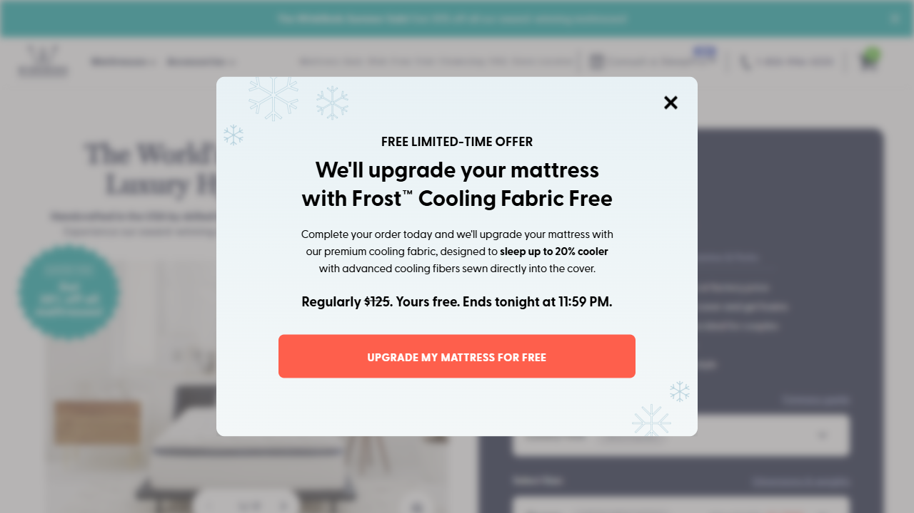
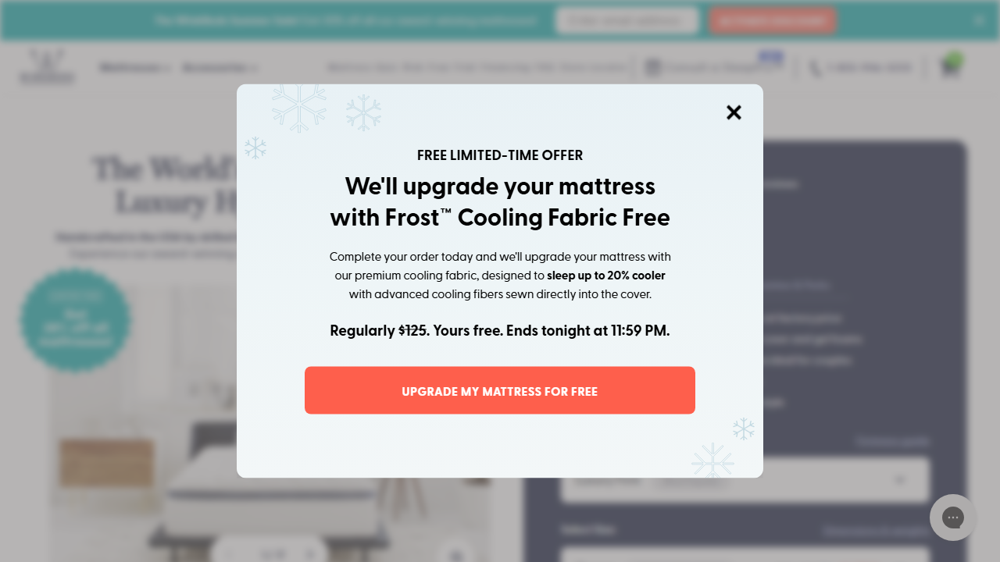
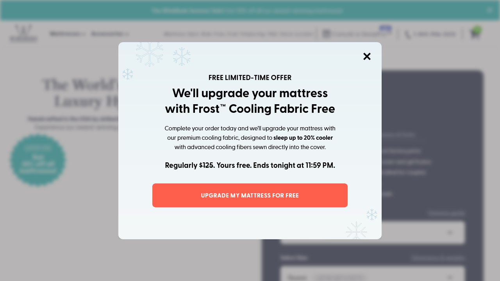
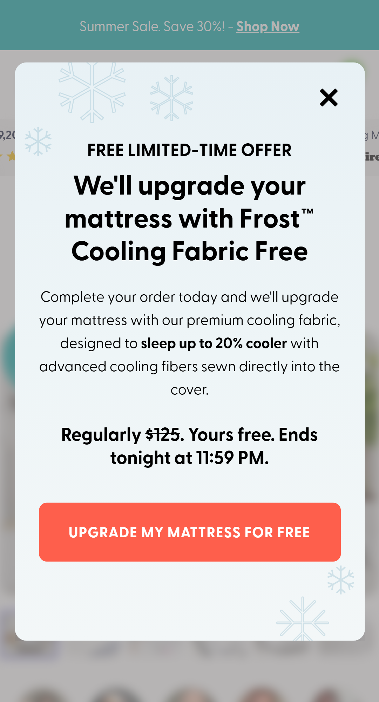
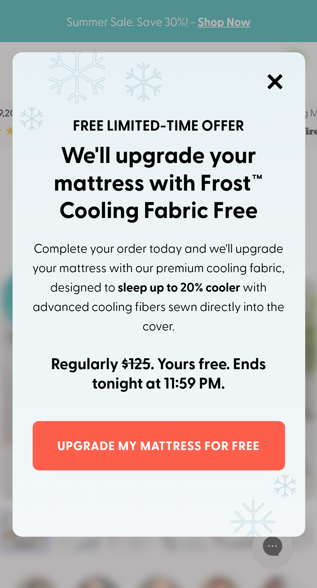
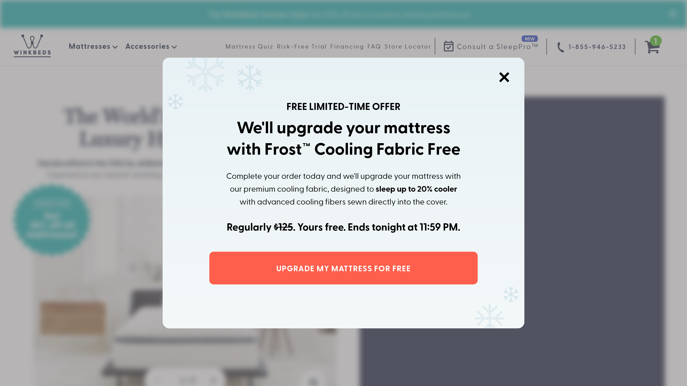

100350199 ·
QA report generated 2026-08-06 · updated 2026-08-07 (Mobile Chrome completed; WebKit
root-caused and harness-fixed, verification still pending a quota reset) ·
updated 2026-08-13 — re-tested against a new code drop, see §0
File relocation, not a new variation. The code sent
for this re-test lives at local_testing/Local2/variation/v2.js +
v2.css, not vB.js/vB.css — those are shared scratch
files reused across unrelated QA jobs in this repo and had since been overwritten with
different, unrelated work-in-progress. The Playwright spec was repointed at
v2.js/v2.css accordingly; all sections below this one describe the
earlier vB.js-era code and are kept for historical reference.
| Browser | Result | Notes |
|---|---|---|
| Chrome Desktop | 43/43 · 36 pass / 7 fail | Confirmed still-open: BUG-02, BUG-03, BUG-04, BUG-06, BUG-11 (×2). TC-02 & TC-08 now pass. One TC-04 flake (timing), passed on isolated re-run. |
| Mobile Safari (iPhone 12) | 43/43 attempted · 30 pass / 13 fail | First-ever full run past the historical 0/43 wall. Groups A/B/C/E clean. Confirmed on WebKit mobile for the first time: BUG-04, BUG-11 (×2), BUG-03+BUG-04 (TC-40). 8 of Group D's 9 cases hit the HTTP 429 limiter partway through and are inconclusive, not confirmed pass or fail — same coverage gap as every prior session, just smaller. |
| Firefox Desktop | 43/43 · 32 pass / 11 fail | Bonus data (outside this round's requested scope, not independently re-verified). Same 6 confirmed defects as Chrome. 5 extra failures trace to one Firefox browser-context crash mid-run, not a code defect. |
init() now gates on plain body
and injects into document.body — exactly the fix this report recommended. TC-02
now passes on every browser tested this round.
Every one of the 31 failures is accounted for by a defect below — there are no unexplained reds. 4 of 6 browsers are complete (Chrome, Firefox, Edge, Mobile Chrome); see “Coverage & what is not covered”. The two WebKit projects remain the gap.
Sources of truth, in the order the QA workflow requires
(_shared/qa-workflow.md): the Figma export Group 1931.png first, then
the video transcript v2.js, then the code
(local_testing/Local2/variation/vB.js + vB.css). Assertions encode the
design, so a failing case is a bug in the code, not a broken test.
A visitor who reaches checkout and comes back, with exactly one WinkBed mattress in the
cart that does not already have the Frost™ Cooling Cover, is shown a modal offering that
cover free (normally $125). Accepting swaps the cart line for the equivalent
Frost-Cooling variant and forwards them to checkout with discount code
FROST3S1CFP.
cre-t-257-deployment (100350217) —
the only writer of the trigger cookie, on mousedown of
a[href="/checkout"]. Gated to audience cro_mode=qa.creT257Activation — checks four conditions, then
executeExperiment("100350199") after
setTimeout(…, 5000). The 5s delay and the qualification logic live here,
not in vB.js — both are implemented and are not bugs.100350199 — carries vB.js + vB.css.
Goal 100334269 tracks clicks on .cre-t-257-cta.| Browser / device | Cases run | Pass | Fail | Status |
|---|---|---|---|---|
| Chrome Desktop (1280×800) | 43 / 43 | 36 | 7 | Complete. All 7 failures are intended spec reds. |
| Firefox Desktop | 43 / 43 | 35 | 8 | Complete. One extra red — TC-33 (BUG-06), see §4. |
| Edge Desktop | 43 / 43 | 35 | 8 | Complete. Per-case outcomes identical to Firefox — including TC-33. |
| Mobile Chrome (Pixel 5) | 43 / 43 | 35 | 8 | Complete. Per-case outcomes identical to Firefox and Edge — same eight reds, including TC-33. |
| Safari Desktop (WebKit) | 2 / 43 | 2 | 0 | Blocked — TC-01 and TC-03 passed in earlier windows, so the modal is confirmed to render correctly on WebKit (see the Safari screenshot in §5). The remaining 41 are NOT RUN, not failed. |
| Mobile Safari (iPhone 12) | 0 / 43 | — | — | Not run |
/products.json call with
HTTP 429 and an HTML page titled “Verifying your connection…”. Because
.json() then throws Unexpected token '<', this initially looked like
a catalog defect; plain curl still returned HTTP 200, so the limiter keys on the
browser session and request volume rather than the IP. Continuing would have produced failures
that describe the rate limiter rather than the variation, so the matrix was stopped instead.
Edge was subsequently completed in a second window, but the limiter re-tripped immediately
afterwards and WebKit sessions were rejected within about a second.
domcontentloaded on this page — measured directly at
document.readyState: 'loading' for over two minutes with zero pending
network requests. This needed an actual code fix (a WebKit-only navigation path), not a
cooldown; see §6./products.json only, then /cart/add.js even via
out-of-band requests while reads still worked, then, after the navigation fix let WebKit
run further, raw page.goto() on the bare PDP URL. Each
shape looks like a different bug until probed directly — always re-probe fresh rather
than trust the previous session’s diagnosis.setCart skips the clear+add when the cart already matches. Cart reuse only helps
within a case, since Playwright gives every test a fresh (incognito-equivalent) context.
BUG-14 $125 discount armed with no upgrade and no error new this session TC-40 proven live: Chrome + Firefox
The single most damaging path found, and it needs no network failure to happen — only a product the catalog already sells.
WinkBeds Blue Collection - B2 contains the substring “winkbed”, so it satisfies
the activation’s cartMeetsMattressCondition and vB.js:64 — the
offer is shown. The firmness parse at vB.js:85 then cannot match “Blue Collection”,
so upgradeWinkbedToFrostCooling() returns at line 87, before touching the
cart. But the redirect on vB.js:218 is not conditional on the result:
await upgradeWinkbedToFrostCooling(); // returns undefined at line 87 window.location.href = "…/discount/FROST3S1CFP?redirect=/checkout"; // fires anyway
Measured outcome: zero cart writes, cart unchanged
(Blue Collection - B2 - Twin ×1), and the discount URL requested. The customer
reaches checkout holding a live $125 code, having been promised an upgrade they did not get,
with nothing shown to indicate failure.
Fix: resolve BUG-04 and BUG-03 together — match on the four known handles, and gate the redirect on a verified cart.
BUG-02 Cart is mutated before the replacement is resolved TC-32
vB.js:100 removes the original line item, and only then fetches the catalog and
looks up the replacement. Both later failure paths (!product line 121,
!targetVariant line 134) return with the mattress already deleted — the code’s own
comments admit this. TC-32 captured it precisely: one POST 200 /cart/change.js,
then the lookup blocked, then final cart: {"count":0,"items":[]}.
The customer’s mattress is gone.
Fix: resolve the target variant id first, then swap, and roll back on failure.
BUG-03 Redirect is not conditional on the swap succeeding corrected this session
Previously recorded as “the redirect always fires when the swap fails”. That is too strong, and the distinction matters for the fix. Measured behaviour:
return paths (lines 69, 87, 121, 134) the redirect
does fire. Lines 121/134 return after the removal → cart emptied
and discount armed. Lines 69/87 return before it → cart intact, discount armed
(this is BUG-14).Fix: redirect only after verifying the updated cart; on failure restore it and surface an error.
BUG-01 Modal can only ever render on the shop-winkbed PDP TC-02
vB.js:257 waits for
body#winkbeds-luxury-hybrid-mattress-120-night-trial-lifetime-warranty and
vB.js:196 injects into the same selector. The transcript (2:39) says “It’s modal.
It’ll appear on any page on the site.” The homepage body id is
winkbeds-luxury-hybrid-mattress-the-best-bed-for-better-sleep, so on every non-PDP
page waitForElement times out after 15s and init silently never runs — including on
both QA preview links.
Fix: gate on body, inject into document.body.
BUG-04 “winkbed” substring match has live false positives TC-10 — fails on Chrome, Firefox, Edge and Mobile Chrome
Both vB.js:64 and the activation match
item.title.toLowerCase().includes('winkbed'). Real catalog products that also match:
The WinkBed Kids Mattress - Standard Profile, … - Low Profile,
WinkBeds Blue Collection - B1, - B2. TC-10 drives the genuine
activation path and confirms the offer is shown for these. This is the entry point to
BUG-14.
Fix: match the four known handles
(the-{softer,plus,luxury-firm,firmer}-winkbed) or product ids.
BUG-05 “One mattress” is enforced as “one line item”, ignoring quantity TC-08
winkbedItems.length !== 1 counts line items, so a single line with
quantity: 2 qualifies (transcript 1:45: “not two or three or four”). Worse,
vB.js:144 re-adds with the same quantity while Figma notes the code is “limited to 1
per order” — so a qty-2 swap adds $250 of upgrade against a $125 discount and
overcharges the customer $125 versus the promise.
Fix: require quantity === 1 in both the activation and vB.js.
BUG-06 CTA has no in-flight guard — double-click causes concurrent cart mutations TC-33 — red on Firefox, Edge and Mobile Chrome; green on Chrome only
vB.js:212 binds by delegation and only adds a spinner class. Three rapid clicks
start three overlapping runs, leaving a wrong cart count.
This is the clearest reason to test more than one browser — and the result sharpened once Edge finished. Edge is Chromium, the same engine as Chrome, and it fails this case. So the earlier reading that “Chromium serialises the concurrent runs” was wrong: there is no engine-level protection at all. It is a plain race whose outcome depends on request timing, and Chrome’s green is luck on the day. Treat BUG-06 as reproducible everywhere.
Fix: set an inFlight flag and pointer-events:none
on the CTA.
BUG-07 No error handling; a network failure leaves a permanent spinner and a broken cart
upgradeWinkbedToFrostCooling has no try/catch and none of its four
fetches check res.ok. A rejection escapes the async live
handler, where the outer try/catch at vB.js:2 can no longer catch it.
The body.cre-t-257-cta-clicked spinner class is never cleared and the CTA label stays
hidden, so the modal is visibly dead with the cart possibly already emptied by BUG-02.
Fix: try/catch/finally, clear the spinner class, check
res.ok, show a retry state.
BUG-08 Trigger cookie only arms on
a[href="/checkout"] mousedown
Not covered: the /cart page’s <button name="checkout">,
accelerated checkout (Shop Pay / PayPal / Google Pay), “Buy it now”, and any direct navigation to
/checkout. Verified: page.goto('/checkout') left the cookie unset. Those
visitors return from checkout and never see the offer — the test under-triggers.
BUG-09 Deployment is gated to
cro_mode=qa — correct for QA, but audience 10034538 must be
removed before launch or the experiment can never activate for real traffic.
Go-live checklist item.
BUG-10 Cookie is deleted on first show, before the user acts
vB.js:251 calls removeSessionCookie as soon as the handler binds. If
the visitor navigates — or the modal never rendered because of BUG-01 — the offer is consumed and
cannot return. The cookie also carries no SameSite/Secure attributes.
Intended frequency capping is unspecified; decide and document it.
BUG-11 Modal is mouse-only and its ARIA roles are invalid TC-28, TC-29 — red on all four completed browsers
role="button" tabindex="0" on .cre-t-257-modal-close and
.cre-t-257-cta with click-only handlers, so Enter/Space do
nothing and there is no Esc-to-close. No focus move into the dialog, no focus trap,
background not aria-hidden. role="dialog" is on both the empty overlay
and the container (vB.js:157-158); role="text" is not a valid ARIA role;
role="heading" has no aria-level.
BUG-12 Variant-title matching is brittle.
vB.js:125-126 builds "<size> with Frost Cooling Cover" and requires
exact lowercase equality. Correct today (verified for all four firmnesses × six sizes), but any
catalog rename routes silently into BUG-02/BUG-03. Prefer matching the option value.
BUG-13 Hardcoded absolute redirect host.
vB.js:218 hardcodes https://www.winkbeds.com/…, breaking the flow on any
preview or alternate host. Use a relative path.
SITE-01 Not ours, but worth reporting:
404 /assets/underline_blue.svg is requested twice per PDP load and is referenced by
neither vB.js nor vB.css. Also observed: a layout.theme.js
compare_at_price TypeError, and 13 × 503 /.well-known/shopify/monorail.
Pre-existing first-party issues.
Seven cases assert the Figma/transcript spec rather than current behaviour, so their red is the deliverable — they must not be “fixed” to pass. They are marked spec red.
| Case | Chrome | Firefox | Edge | Mob. Chrome | Meaning |
|---|---|---|---|---|---|
| A · Trigger & qualification | |||||
| TC-01 Control renders no modal / no artefacts | PASS | PASS | PASS | PASS | Control is clean. |
| TC-02 Modal must appear on ANY page (homepage) spec red | FAIL | FAIL | FAIL | FAIL | BUG-01 |
| TC-03 Modal renders on the PDP when all 4 conditions met | PASS | PASS | PASS | PASS | Happy-path render OK. |
| TC-04 Real activation fires, and honours the 5s delay | PASS | PASS | PASS | PASS | Genuine Convert path; delay verified against navigationStart. |
| TC-05 Does not qualify: cart empty | PASS | PASS | PASS | PASS | Gate correct. |
| TC-06 Does not qualify: already has Frost Cooling | PASS | PASS | PASS | PASS | Gate correct. |
| TC-07 Does not qualify: two WinkBed line items | PASS | PASS | PASS | PASS | Gate correct. |
| TC-08 Must not qualify with quantity 2 spec red | FAIL | FAIL | FAIL | FAIL | BUG-05 |
| TC-09 Does not qualify: GravityLux / EcoCloud | PASS | PASS | PASS | PASS | Correctly excluded. |
| TC-10 Must not qualify on a non-mattress “WinkBed” product spec red | FAIL | FAIL | FAIL | FAIL | BUG-04, via the real activation. |
| TC-11 Does not qualify without checkout-return signals | PASS | PASS | PASS | PASS | Gate correct. |
| TC-12 Trigger cookie arms on a checkout-link click | PASS | PASS | PASS | PASS | Deployment works for this one selector (cf. BUG-08). |
| B · Modal content & styling | |||||
| TC-13 Copy matches Figma exactly | PASS | PASS | PASS | PASS | Eyebrow, title, body, price line and CTA all match, including casing. |
| TC-14 $125 struck through | PASS | PASS | PASS | PASS | |
| TC-15 Overlay dims page, sits above site content | PASS | PASS | PASS | PASS | |
| TC-16 Underlying page blurred | PASS | PASS | PASS | PASS | blur(5px) on main/header/promo; footer intentionally not blurred. |
| TC-17 Wrapper gradient, radius, shadow | PASS | PASS | PASS | PASS | #e8f1f5→#f3f7f8. |
| TC-18 Five snowflakes load, non-interactive | PASS | PASS | PASS | PASS | All assets resolve. |
| TC-19 CTA styling: red pill, white bold text | PASS | PASS | PASS | PASS | |
| TC-20 Centred, within 674px max width | PASS | PASS | PASS | PASS | |
| TC-21 Close icon present, sized, positioned | PASS | PASS | PASS | PASS | |
| TC-22 Spinner hidden until CTA clicked | PASS | PASS | PASS | PASS | |
| TC-23 No duplicate modal on repeated injection | PASS | PASS | PASS | PASS | Idempotent. Edge blocked by 429. |
| C · Dismissal | |||||
| TC-24 Close icon dismisses | PASS | PASS | PASS | PASS | |
| TC-25 Click outside dismisses | PASS | PASS | PASS | PASS | |
| TC-26 Click inside does not dismiss | PASS | PASS | PASS | PASS | |
| TC-27 Blur removed after dismissal | PASS | PASS | PASS | PASS | No visual residue. |
| TC-28 Escape dismisses spec red | FAIL | FAIL | FAIL | FAIL | BUG-11 — no keydown handler. |
| TC-29 Close control keyboard operable (Enter) spec red | FAIL | FAIL | FAIL | FAIL | BUG-11 — click-only handler. |
| D · CTA swap & redirect real cart writes on production | |||||
| TC-30 Swap keeps size + firmness — Luxury Firm / Queen | PASS | PASS | PASS | PASS | The happy path works: cart ends with the matching … with Frost Cooling Cover variant, qty 1, and the discount URL is requested. |
| TC-30 — Softer / King | PASS | PASS | PASS | PASS | |
| TC-30 — Firmer / Cal. King | PASS | PASS | PASS | PASS | |
| TC-30 — Plus / Twin XL | PASS | PASS | PASS | PASS | |
| TC-31 Spinner replaces CTA label during swap | PASS | PASS | PASS | PASS | Loading state appears (but never clears on failure — BUG-07). |
| TC-32 No redirect when the swap cannot complete spec red | FAIL | FAIL | FAIL | FAIL | BUG-02 — cart emptied: one change.js, then count:0. |
| TC-33 Double-click must not double-mutate spec red | PASS | FAIL | FAIL | FAIL | BUG-06 — fails on Firefox, Edge and Mobile Chrome. Chrome green is timing luck, not a guard. |
| TC-34 Discount URL is exactly the Figma link | PASS | PASS | PASS | PASS | /discount/FROST3S1CFP?redirect=/checkout — correct. |
| TC-40 No discount redirect when item cannot be upgraded spec red | FAIL | FAIL | FAIL | FAIL | BUG-14 — the revenue-loss path. |
| E · Responsive & hygiene | |||||
| TC-35 Fits viewport, no horizontal overflow | PASS | PASS | PASS | PASS | Measured as a delta against the pre-injection baseline. |
| TC-36 Snowflakes do not overlap CTA or title | PASS | PASS | PASS | PASS | |
| TC-37 Mobile type ramp below 768px | PASS | PASS | PASS | PASS | 28px/34px as specified. |
| TC-38 No JS errors attributable to the variation | PASS | PASS | PASS | PASS | Resolved — the errors seen are site noise, see SITE-01. |
| TC-39 Background scroll-locked while modal open | PASS | PASS | PASS | PASS | Passes — retracts part of BUG-11. |




$125, red CTA and the
snowflake decorations all render, with the page correctly blurred behind. Confirms the mobile
type ramp (TC-37) and the no-overflow requirement (TC-35).

Seven findings across this QA were harness defects, not product defects. They are recorded here because the previous interim numbers were distorted by them. Items 6–7 were found while adding Mobile Chrome and attempting WebKit.
readCart used an in-page
fetch. Group D aborts the discount navigation, and Chromium commits an
error-page document for a failed main-frame navigation, so a relative fetch threw.
Now read out of band via page.context().request; proven to observe the same cart
session (identical cart token from both paths).injectVariation slept a
fixed 1200 ms. vB.js polls on a 50 ms setInterval that Firefox throttles on this
~1.8 MB page; the modal actually arrives at 1.2–3.0 s. Now polls for the
overlay.domcontentloaded, but that timer is anchored to when Convert’s JS runs. Now
measured in-page with performance.now(), which genuinely verifies the delay.scrollWidth, attributing
the site’s own (run-varying) overflow to our modal. Now baseline-relative.navigationStart, but so was the give-up deadline
(performance.now() > 20000). That poll only starts after
page.reload() resolves domcontentloaded, which on Mobile Chrome
lands at ~16–20 s — leaving 0–4 s of budget against an activation that needs 5 s, so it
reported “never fired” immediately. TC-10, which waits 14 s on the same real activation
path, was firing fine all along. The deadline is now relative to when polling starts; the
>= 5000 ms delay assertion is unchanged. TC-04 passes on Mobile
Chrome.domcontentloaded is the wrong
readiness signal for WebKit on this page. Measured directly: WebKit leaves
document.readyState at loading for over two minutes with
zero pending network requests, so it is not a network problem and no timeout
increase fixes it. The head parses slowly (1 → 28 → 70 → 116 children) and
<body> only exists at ~20–25 s. Navigation on WebKit now uses
waitUntil:'commit' plus an explicit body-ready wait. Chromium and Firefox reach
domcontentloaded normally and are deliberately left on the original path, so
every result already recorded for Chrome, Firefox, Edge and Mobile Chrome stands
unchanged.Follow-up fixes (2026-08-07, later the same day). The
page.screenshot() timeout above is now fixed with an explicit 45 s timeout on the
two screenshot call sites, and the WebKit body-ready poll was widened from 60 s to 90 s after
it proved too tight under real test load. Both were validated once (TC-01, TC-03, TC-13 ran
against a live, working page). A production rate-limit escalated immediately afterward —
this time to blocking raw page navigation itself, not just cart calls as
before — so a full WebKit run has not yet been completed end to end with these fixes in
place. Treat them as fixed-but-unverified at scale, not as proof Safari Desktop will finish
cleanly on the next attempt.
TC-10 was also redesigned: it previously used manual injection, which renders the modal unconditionally and so could not test a qualification gate at all. It now drives the real activation, which is why BUG-04 is now confirmed end-to-end rather than by code reading.
body and inject into document.body
(BUG-01), so the modal can appear as specified.try/catch/finally with res.ok checks plus spinner reset (BUG-07).quantity === 1 (BUG-05), or handle multi-quantity
pricing deliberately.cro_mode=qa audience from the deployment (BUG-09) — otherwise the
test can never run for real traffic.